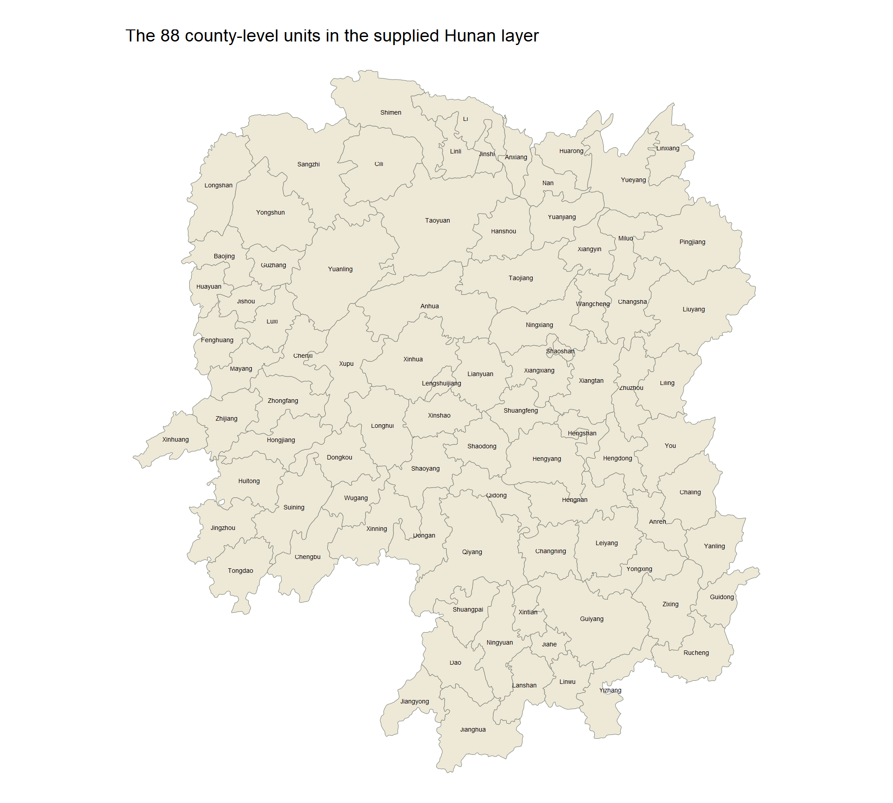
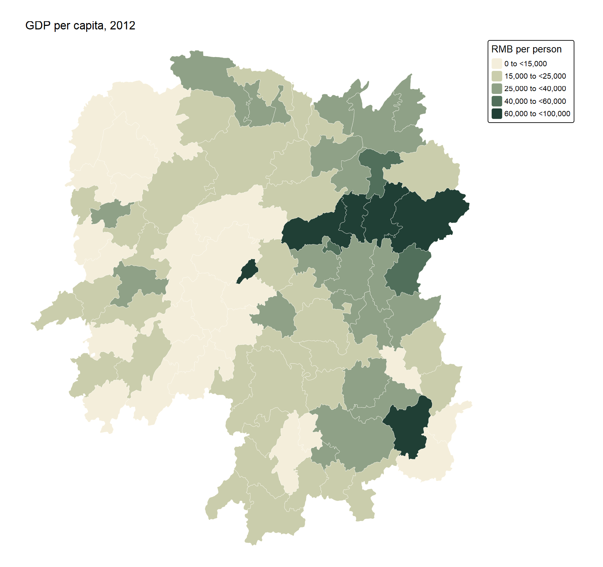
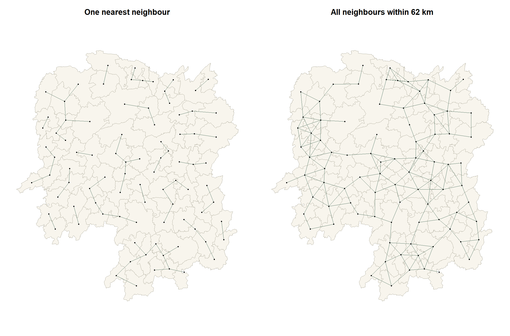
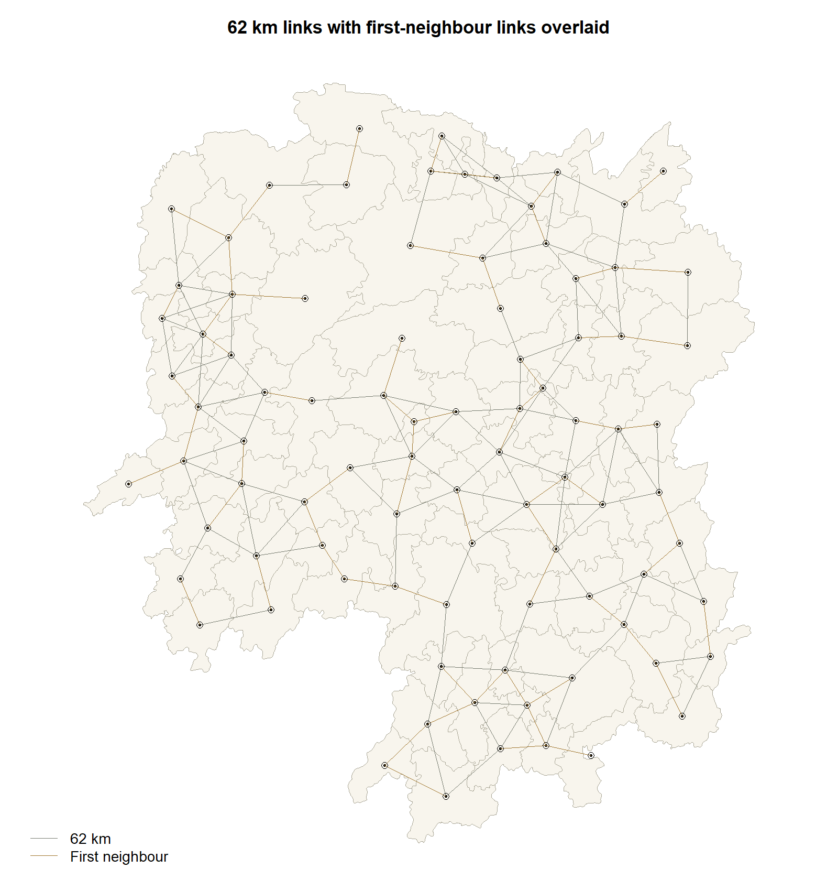
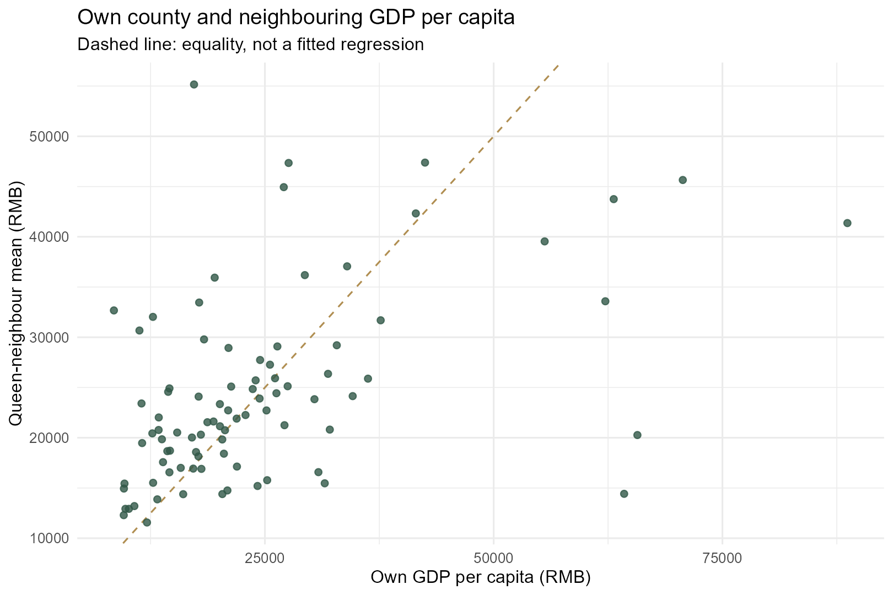

Hands-on Exercise 4: Spatial Weights and Applications
How the definition of a neighbour changes Hunan’s economic comparison
Author
yufanyou2025
Published
September 19, 2026
1 Overview
A county’s GDP per capita can look quite different when it is compared with neighbouring counties rather than with the province as a whole. But “neighbouring” needs a rule. Sharing a boundary, lying within a fixed distance and belonging to the nearest six counties produce different comparison groups.
Following Chapter 8 of the workbook, I build these relationships and use them to calculate neighbourhood summaries of Hunan’s 2012 GDP per capita. The aim is to understand what each weight matrix measures before using it in a statistical model. These are descriptive comparisons, not tests of economic spillovers or causal effects.
2 Study area and supplied data
The supplied archive, data（Spatio-Temporal Point Patterns Analysis）.zip, contains the Hunan county shapefile, Hunan_2012.csv and Dictionary.xlsx. Its filename refers to another topic, but the contents match Chapter 8. No replacement data were downloaded.
The study uses the 88 county-level units present in this teaching extract. It should not be treated as a complete contemporary inventory of all Hunan administrative units. The dictionary identifies GDPPC as gross domestic product per capita, measured in RMB; the CSV is the 2012 cross-section. GDP per capita is neither household income nor total GDP. The original statistical publisher and boundary vintage are not established by the supplied metadata, so I do not assign them an invented date or provenance.
The workflow uses sf, spdep, tmap, dplyr, readr, readxl and ggplot2. Quarto and knitr assemble the page. Package versions are recorded in session information. All calculations and figures are rebuilt in a fresh R session, with no analytical cache.
3 Bringing the data into R
3.1 Import and relational join
The shapefile supplies geometry and county identifiers. The CSV supplies the economic variables. I join explicitly on County, check that keys are unique in both sources, and require a one-to-one match. This avoids an accidental join on every similarly named field. Polygon order is preserved because neighbour indices and lag vectors must refer to the same counties throughout.
Show R code
hunan_boundary <-st_read(file.path(base4,"data/geospatial/Hunan.shp"),quiet=TRUE)hunan2012 <-read_csv(file.path(base4,"data/aspatial/Hunan_2012.csv"),show_col_types=FALSE)stopifnot(!anyDuplicated(hunan_boundary$County),!anyDuplicated(hunan2012$County))unmatched_boundary <-anti_join(st_drop_geometry(hunan_boundary),hunan2012,by="County")unmatched_table <-anti_join(hunan2012,st_drop_geometry(hunan_boundary),by="County")stopifnot(nrow(unmatched_boundary)==0,nrow(unmatched_table)==0)hunan <-left_join(hunan_boundary,hunan2012,by="County",relationship="one-to-one")stopifnot(nrow(hunan)==88,!anyNA(hunan$GDPPC),all(is.finite(hunan$GDPPC)),all(hunan$GDPPC>0),st_crs(hunan)$epsg==4326,!any(st_is_empty(hunan)),all(st_is_valid(hunan)))# Preserve polygon order: neighbours and lag vectors use this exact order.dictionary <- readxl::read_excel(file.path(base4,"data/aspatial/Dictionary.xlsx"))gdppc_definition <- dictionary |>filter(Variable=="GDPPC")audit4 <-tibble(check=c("Boundary rows","Indicator rows","Joined rows","Duplicate county keys","Unmatched boundary keys","Unmatched indicator keys","Missing GDPPC","Invalid geometries","Empty geometries"),value=c(nrow(hunan_boundary),nrow(hunan2012),nrow(hunan),0,nrow(unmatched_boundary),nrow(unmatched_table),sum(is.na(hunan$GDPPC)),sum(!st_is_valid(hunan)),sum(st_is_empty(hunan))))write_csv(audit4,file.path(base4,"outputs/input-audit.csv"))write_csv(gdppc_definition,file.path(base4,"outputs/gdppc-definition.csv"))
Validation check
Result
Boundary rows
88
Indicator rows
88
Joined rows
88
Duplicate county keys
0
Unmatched boundary keys
0
Unmatched indicator keys
0
Missing GDPPC
0
Invalid geometries
0
Empty geometries
0
Every county matches, and no GDPPC value is missing. The supplied geometries are valid and use WGS84 (EPSG:4326), so no repair or row deletion is needed.
4 Visualising the regional development indicator

County names in the supplied Hunan layer.

GDP per capita in 2012, in RMB per person.
The highest value in this extract belongs to Changsha, at RMB 88,656 per person. The darker counties are concentrated around the eastern part of the map, with additional high-valued counties further south. The county labelled Changsha is the county-level unit in this file, not automatically the whole prefecture-level city.
All mean-based comparisons below use the same five intervals and colours. That matters: independently classifying each map could make a smoothed neighbourhood mean appear just as variable as the original observations.
5 Contiguity-based neighbours
5.1 Queen and Rook definitions
Queen contiguity accepts a shared edge or vertex. Rook contiguity requires a shared boundary segment. Both use the supplied polygon topology rather than centroid distance.
Queen and Rook connectivity graphs drawn over the same county boundaries.
Queen produces 448 directed neighbour entries and Rook produces 440. Since both graphs are symmetric, these represent 224 and 220 unique undirected pairs. Queen therefore adds four pairs that Rook does not recognise. Both graphs form one connected component and neither has an isolated county.
Under Queen contiguity, Taoyuan has the most neighbours (11). Xinhuang and Linxiang each have only 1. These different neighbour counts will matter when interpreting sums and averages.
5.2 Inspecting Anxiang’s neighbours
Show R code
queen[[anxiang]]
[1] 2 3 4 57 85
Show R code
hunan$County[queen[[anxiang]]]
[1] "Hanshou" "Jinshi" "Li" "Nan" "Taoyuan"
Anxiang has five Queen neighbours. The distance columns below use the centroid method explained in the next section; distance changes the IDW weights, but does not determine whether a county enters this Queen list.
Neighbour
GDPPC (RMB)
Centroid distance (km)
Equal weight
Hanshou
20981
65.12
0.2
Jinshi
34592
25.53
0.2
Li
24473
54.91
0.2
Nan
21311
35.61
0.2
Taoyuan
22879
87.36
0.2
6 Distance-based neighbours
6.1 Centroids, units and cut-off distance
I calculate centroids after transforming the polygons to UTM zone 49N (EPSG:32649), then transform those points back to WGS84. Both nearest-neighbour selection and distance measurement explicitly use longlat=TRUE, giving great-circle distances in kilometres. These are representative-point distances, not road distances or minimum distances between county boundaries.
Show R code
# Form centroids in metres, then transform back for great-circle distances in km.hunan_projected <-st_transform(hunan,32649)centres <-st_transform(st_centroid(st_geometry(hunan_projected)),4326)coords4 <-st_coordinates(centres)stopifnot(!anyDuplicated(as.data.frame(coords4)))nearest1 <-knn2nb(knearneigh(coords4,k=1,longlat=TRUE),row.names=hunan$County)nearest_dist <-unlist(nbdists(nearest1,coords4,longlat=TRUE))threshold_km <-ceiling(max(nearest_dist))fixed62 <-dnearneigh(coords4,0,62,longlat=TRUE,row.names=hunan$County)knn6 <-knn2nb(knearneigh(coords4,k=6,longlat=TRUE),row.names=hunan$County)knn6_symmetric <-make.sym.nb(knn6)stopifnot(threshold_km<=62,all(card(fixed62)>0),all(card(knn6)==6))# Reproduce the workbook's degree-coordinate centroids and default planar KNN# only as a sensitivity check; never label degree distances as kilometres.chapter_coords <-t(vapply(st_geometry(hunan),function(g) as.numeric(st_centroid(g)),numeric(2)))chapter62 <-dnearneigh(chapter_coords,0,62,longlat=TRUE)chapter6 <-knn2nb(knearneigh(chapter_coords,k=6,longlat=FALSE))changed_links <-function(a,b) sum(vapply(seq_along(a),function(i) length(setdiff(a[[i]],b[[i]])),integer(1)))sensitivity4 <-tibble(comparison=c("62 km: projected vs workbook centroids","6-NN: great-circle/projected centroids vs workbook planar degrees"),added_directed_links=c(changed_links(fixed62,chapter62),changed_links(knn6,chapter6)),removed_directed_links=c(changed_links(chapter62,fixed62),changed_links(chapter6,knn6)))networks <-list(Queen=queen,Rook=rook,`1-NN`=nearest1,`62 km`=fixed62,`6-NN`=knn6,`6-NN symmetric union`=knn6_symmetric)graph_summary <-bind_rows(lapply(names(networks),function(nm){nb<-networks[[nm]];degrees<-card(nb)tibble(method=nm,links=sum(degrees),mean_degree=mean(degrees),min_degree=min(degrees),max_degree=max(degrees),isolates=sum(degrees==0),components=n.comp.nb(make.sym.nb(nb))$nc,symmetric=is.symmetric.nb(nb,force=TRUE))}))component62 <-n.comp.nb(fixed62)$comp.iddegree_table <-tibble(County=hunan$County,queen=card(queen),rook=card(rook),fixed62=card(fixed62),knn6=card(knn6),component62=component62)
The longest first-neighbour distance is 58.36 km. Rounding upward gives 59 km, supporting the chapter’s 62-km threshold without leaving any county isolated. This guarantees at least one neighbour, not that the whole graph must be connected; connectivity is checked separately.
6.2 Fixed-distance neighbours and the chapter quiz

First-neighbour links compared with links within 62 km.

First-neighbour links overlaid on the fixed-distance graph.
The quiz’s “average number of links” is the total number of directed neighbour entries divided by the number of counties: 324 / 88 = 3.6818. It is not an average distance. Here the 62-km graph has one connected component, whereas the one-nearest-neighbour graph has 24 weakly connected components despite every county selecting one neighbour.
Each county selects exactly six neighbours, giving 528 directed entries. This controls the number of comparisons, but allows the search distance to expand where centroids are sparse. A selection need not be reciprocal: county A can select B without B selecting A. Taking the symmetric union increases the graph to 614 entries and allows some counties to have more than six neighbours.
Definition
Directed entries
Mean degree
Min
Max
Isolates
Weak components
Symmetric
Queen
448
5.09
1
11
0
1
TRUE
Rook
440
5.00
1
10
0
1
TRUE
1-NN
88
1.00
1
1
0
24
FALSE
62 km
324
3.68
1
6
0
1
TRUE
6-NN
528
6.00
6
6
0
1
FALSE
6-NN symmetric union
614
6.98
6
10
0
1
TRUE
The county-level degree table provides each county’s neighbour counts and 62-km component identifier.
6.4 Checking the workbook’s coordinate convention
The chapter obtains centroids directly from longitude/latitude geometries and calls knearneigh() on a coordinate matrix without specifying longlat=TRUE. I retain that version as a sensitivity check, not as the primary distance calculation. Relative to it, my consistent projected-centroid/great-circle approach replaces 17 directed six-neighbour links. The 62-km graph is unchanged. This comparison changes both centroid construction and distance metric, so it does not attribute the difference to either one alone.
For the existing Queen neighbours, I calculate \(a_{ij}=1/d_{ij}\), where distance is in kilometres. A nearby Queen neighbour receives a larger weight, but a non-Queen county remains excluded even if its centroid is relatively close. No centroid pairs coincide, so the reciprocal is finite.
For Anxiang, nearby Jinshi receives about 34.9% of the normalised inverse-distance weight, compared with 20% under equal weighting. Taoyuan receives about 10.2%. The resulting IDW neighbour mean is RMB 26,571.9, higher than the equally weighted mean because higher-valued Jinshi gets more influence.
For equal Queen weights, row standardisation sets each neighbour’s weight to \(1/n_i\). Anxiang’s five weights are 0.2 each. County row 10 (Anren) has eight neighbours and therefore eight weights of 0.125. This is the row used in the chapter’s eight-neighbour example; it is not the first polygon.
The chapter’s glist=ids, style="B" calculation retains the supplied raw reciprocal-distance weights. It does not normalise their row sums. I show that version as IDW_raw, then use style="W" for the normalised IDW comparison. The spdep weights documentation distinguishes these coding schemes.
Weight scheme
Smallest row sum
Largest row sum
Queen_W
1.0000
1.0000
Queen_B
1.0000
11.0000
IDW_raw
0.0209
0.1714
IDW_W
1.0000
1.0000
I use zero.policy=FALSE because these analysis graphs have no isolates. A future isolated county should trigger investigation rather than silently receive a zero GDPPC lag. Neither binary weighting nor normalisation automatically corrects boundary effects: counties near the edge still lack comparisons with omitted areas outside the extract. Also, row-standardised weights need not be symmetric even when the underlying neighbour relation is symmetric.
9 Applying the spatial weights
Let \(x_i\) be county i’s GDP per capita, \(N_i\) its Queen-neighbour set, and \(n_i\) the number of neighbours. The four requested measures have different meanings:
Measure
Calculation
Includes own county?
Neighbour mean
\(\sum_{j\in N_i}x_j/n_i\)
No
Neighbour sum
\(\sum_{j\in N_i}x_j\)
No
Window mean
\((x_i+\sum_{j\in N_i}x_j)/(n_i+1)\)
Yes
Window sum
\(x_i+\sum_{j\in N_i}x_j\)
Yes
These means give each county equal influence, not each resident. Summing county per-capita ratios does not produce total GDP; calculating an aggregate economic measure would require compatible GDP and population denominators.
For Anxiang, the five neighbouring GDPPC values sum to 124,236. Dividing by five gives 24,847.2 RMB per person. This is the chapter question’s interpretation of the row-standardised lag: it describes the comparison group, not Anxiang’s own GDPPC of 23,667.
Own-county GDPPC and its Queen-neighbour mean, using identical colour intervals.
The sharp local contrast around Lengshuijiang illustrates what smoothing can conceal. Its own GDPPC is 64,257, while its three neighbours average only 14,419.3. A neighbourhood mean is useful context, but it should not replace the original value when assessing that county.
Own-county GDPPC and the sum of neighbouring per-capita values.
The second chapter question can now be answered directly: a binary-weight lag adds the five values without dividing, so Anxiang’s lag sum is 124,236. Larger sums can reflect more neighbours rather than richer neighbours. In particular, these numbers are sums of per-capita values, not regional output totals. The shared sum-scale legend deliberately makes the original values appear smaller.
Neighbour mean versus the window mean that includes the county itself.
Including Anxiang gives \((124236+23667)/6=24650.5\). Its own value is below its neighbours’ mean, so the window mean moves down. For Lengshuijiang, including the much higher own-county value raises the mean from 14,419.3 to 26,878.8. The change depends on both the local contrast and the number of neighbours.
Neighbour sum compared with the self-inclusive window sum.
Anxiang’s window sum is 147,903, exactly its neighbour sum plus 23,667. The scripts check this identity for every county, as well as the corresponding mean identities. Download all 88 county results or the R weights and results object.
9.5 Looking at the largest local contrasts
County
Own GDPPC
Neighbour mean
Neighbours
Own minus mean
Lengshuijiang
64257
14419.3
3
49837.7
Changsha
88656
41363.7
6
47292.3
Zixing
65706
20269.0
7
45437.0
Pingjiang
17252
55157.8
4
-37905.8
Ningxiang
62202
33582.7
7
28619.3
Wangcheng
70666
45651.2
6
25014.8
Pingjiang shows the opposite pattern to Lengshuijiang: 17,252 locally versus a neighbour mean of 55,157.8. A county may therefore sit near relatively prosperous counties without sharing their observed GDP per capita. This is a reason to inspect local contrasts, not evidence that neighbouring prosperity caused or failed to cause a particular outcome.

Own GDPPC against the Queen-neighbour mean.
No Moran’s I test or spatial regression is performed here. Visual resemblance and a plotted spatial lag do not establish statistically significant autocorrelation. Those questions require an explicitly chosen weights matrix and a suitable inferential method.
10 What I learned
The definition of a peer group is an analytical choice. Queen and Rook differ by only four undirected pairs here, but switching the distance convention replaces 17 directed six-neighbour selections. I would record that choice before comparing estimates across models, rather than treating the weights matrix as background plumbing.
The Anxiang calculation makes normalisation tangible: 24,847.2 is a neighbour mean, 124,236 is a neighbour sum, and 24,650.5 includes Anxiang itself. Their labels are not interchangeable. From an economic perspective, the most important caution is that adding per-capita measures does not recover total output, and averaging county ratios equally is not a population-weighted average.
Finally, the Lengshuijiang and Pingjiang contrasts show why I would retain the original county values beside any smoothed map. A neighbourhood summary changes the question being answered. These 2012 teaching data can illustrate that methodological point, but they do not establish present-day investment attractiveness, household welfare or causal spillovers.
The page follows the chapter’s sequence, with explicit join keys, consistent distance units, audited weight normalisation and shared map classifications. These adjustments are documented above so the differences from the teaching code can be reproduced.